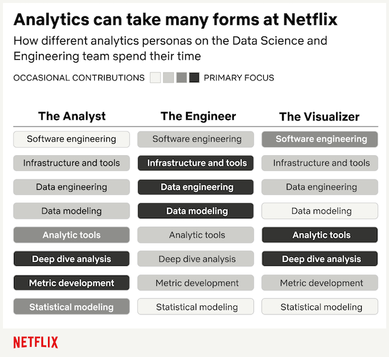

ML in the Browser
What can you do with ML in a modern browser? A showcase from the TensorFlow.js community. My personal favorites were:
Touch-less interface for your hand. It takes some time to get used to it and there is still some polishing to be made. However, after a bit of practice, it becomes kind of fun.
Analyze emotions of your audience in real-time, so that your amazing jokes no longer end in awkwardly muted silence.
AI in Video
Synthesia — a new service to generate video-content:
- Chose from predefined narrators
- Type the script
- It’ll create a video of the person presenting your text in some minutes
Norfair — an open-source library from the Tyro-labs for the object tracking (cars, pedestrians, poses).
And if those are not cool enough for you, how about generating realistic tennis matches with real players. Vid2Player does exactly that. Wanted to change the grand-slam history or play Federer against Federer? Well, now you can do that:
- And since both AI and Video require quite some compute resources and following the horrible launch of 30x cards from NVIDIA, here is a guide on how to chose the one that suits you best while waiting for the cards’ availability.
Analytics
Relaunch of the analytics blog at Netflix has brought two recent articles. The first one is about the broader role of an analyst. I think this diagram is quite cool and shows the depth of what’s analytics in data organizations.

In the other article from them, there is an interview with a couple of data folks. In the spirit of:
Everyone wants to build fancy models or tools, but fewer are willing to do the foundational things like cleaning the data and writing the documentation.
Enough of Netflix. Lastly, an interesting (though quite wordy) take on data cleansing and why it’s not as simple as it’s often presented. I enjoy a lot the attitude from the author:
TL;DR: Cleaning data is considered by some people [citation needed] to be menial work that’s somehow “beneath” the sexy “real” data science work. I call BS.